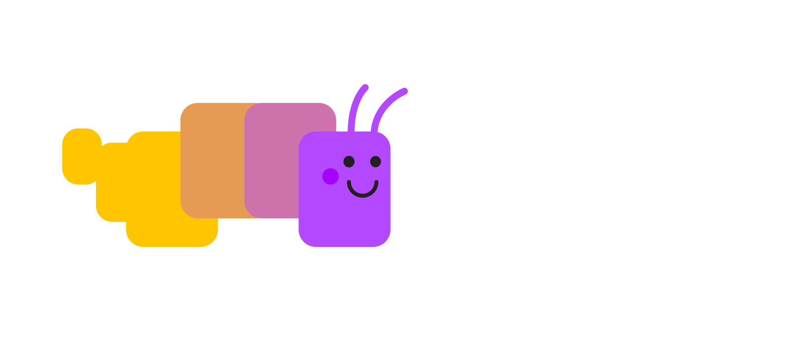

Documentation for
Web Security education

Web platform documentation is critical digital infrastructure.
About
- Florian Scholz
- Technical Writer at Open Web Docs
- https://openwebdocs.org
Our work is funded by donations from organizations and individuals.
OWD contributes to MDN
developer.mozilla.orgWe work on mdn/content, mdn/browser-compat-data and related repos.
- Day to day maintenance
- Project work
Where do we need help?
- Defining requirements for security docs
- Creating a content outline
- Reviewing security docs
- Understanding developer needs
Security docs on MDN
What do we have now?
- Web/Security (19 pages)
- CSP directives reference (30 pages)
- CORS error reference (15 pages)
- Misc security related docs (~25)
Security docs on MDN
- ✅ Reference docs
- ❌ No organization
- ❌ No navigation
- ❌ No user journey
- ❌ No mapping to developer needs
What is documentation?
Diátaxis - A more systematic approach to docs.
 © Daniele Procida. diataxis.fr
© Daniele Procida. diataxis.fr
Survey results
very challenging + somewhat challenging
Tutorials
- Detecting Security Vulnerabilities (71%)
- HTTPS Configuration (45%)
How-Tos
- Integrating Third Party Services (45%)
- Keeping Frameworks and Libraries Up-to-Date (46%)
Guides
- Understanding security threats (69%)
- Understanding the Browser Security Model (66%)
Reference
New content structures
Example exploration
Tutorials
- Configuring a server for secure websites
- Implementing secure authentication
- Auditing your webapp for security vulnerabilities
How-Tos
- How to use a web platform feature
(e.g. TLS, HTTPS, CSP) - How to protect against an attack
(e.g. MITM, XSS, CSRF) - How to implement a site feature securely
Guides
- Browser security model
(e.g. Same-origin, Secure Contexts, User Activation) - Defense mechanisms
(e.g. CSP, SRI, HTTPS, TLS) - Attack vectors
(e.g. MITM, XSS, CSRF)
Reference
- All CSP directives
- Types of attacks
- Security related HTTP headers
What can OWD help with?
- We can organize docs
- We can write docs
- We will keep maintaining docs
What do we need?
- Advise/review from security experts
- Insights into developer misunderstandings & developer needs
Discussion questions
- Lead a workshop or taskforce?
- Create content outline for the 4 quadrants?
- Do additional surveys? (or user interviews?)
Thanks!
- florian@openwebdocs.org
- front-end.social/openwebdocs
- openwebdocs.org